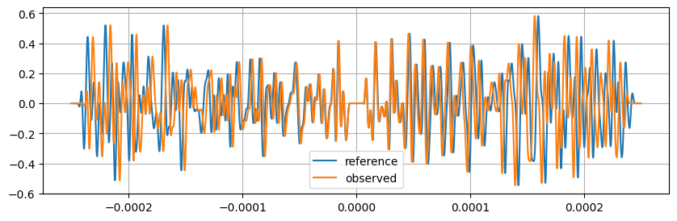

Application to noise correlation functions
A test to show that the stretcher works exactly the same way for positive/negative times
Thus the same approch can be used for two-sided correlation functions.
See jupyter notbook named “examples” for details.
[1]:
import time
import numpy as np
import matplotlib.pyplot as plt
from scipy.signal.windows import tukey
from scipy.signal import butter, sosfiltfilt
from coodddaaaa.stretching import Stretcher # This package
from coodddaaaa.utils import Timer, polyspace, TukeyWindow # This package
[2]:
dt = 1e-7 # sampling, sec
nt = int(5e-4 // dt) # number of samples in time
t0 = -2.5e-4 # start time in sec
time_array = t0 + np.arange(nt) * dt # seconds (NEVER use np.linspace for time vectors)
fnyquist = 0.5 / dt # Hz
tmin = 0.1e-4 # begin of time window in sec
tmax = 2.4e-4 # end of time window in sec
fmin = 0.01 * fnyquist # lower freq Hz
fmax = 0.05 * fnyquist # upper freq Hz
eps_true = 0.02 # the imposed stretching coeff
[3]:
# create the time taper
tukeywin = TukeyWindow(tmin-0.01*nt*dt, tmin, tmax, tmax+0.01*nt*dt)
taper = tukeywin(time_array) + tukeywin(-time_array)
# and the bandpass filter
sos = butter(4.0, [fmin / fnyquist, fmax / fnyquist], output="sos", btype="band") # for
bandpass = lambda signal_array: sosfiltfilt(sos, signal_array) # predefined bandpass filter
[4]:
# Build the reference band-pass / tapered coda
y_reference = bandpass(np.random.randn(nt)) * taper
[5]:
# Build the observed signal, a stretched version of it + noise
stretcher0 = Stretcher(t0=t0, nt=nt, dt=dt, eps=np.array([eps_true]), norm=False) # for stretching only
y_observed = stretcher0.stretch(y_reference)[0, :] # only one trace here
[6]:
# Display
plt.figure(figsize=(10, 3))
plt.plot(time_array, y_reference, label="reference")
plt.plot(time_array, y_observed, label="observed");
plt.gca().legend();
plt.gca().grid(True)
